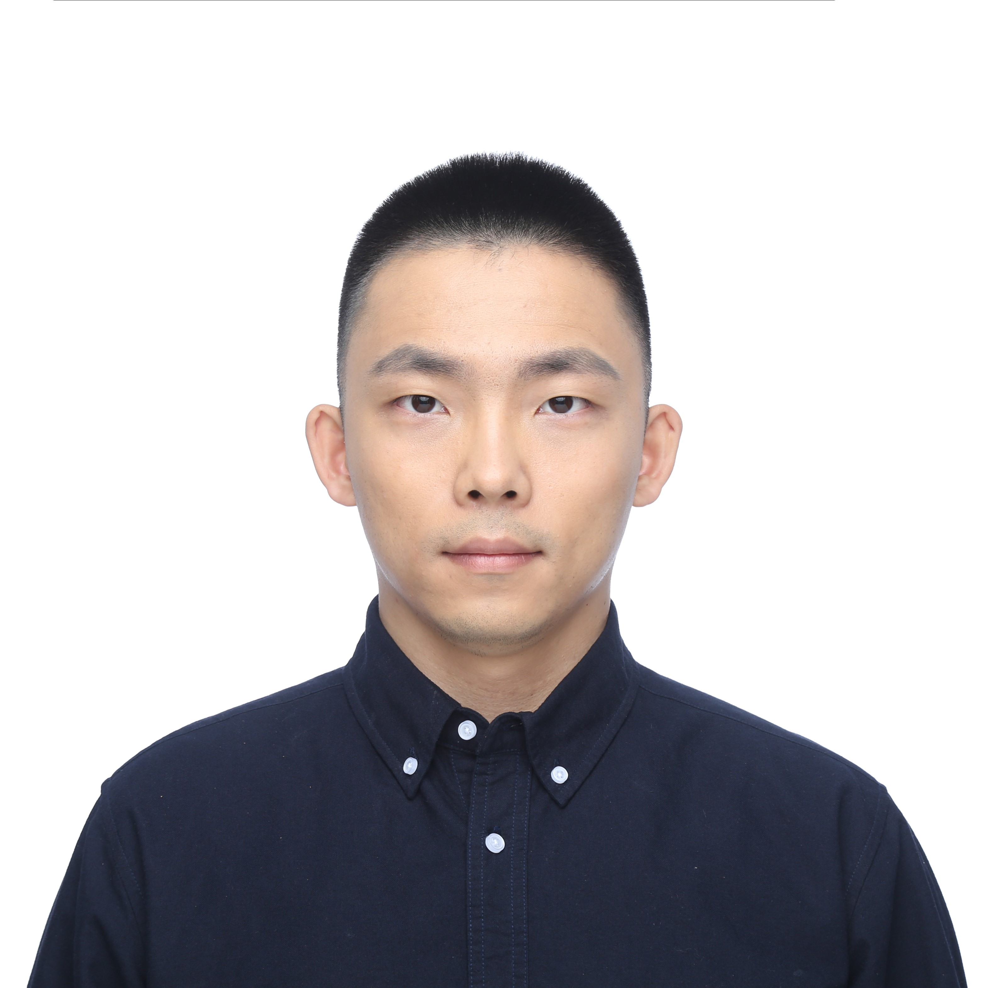

Jin Liu (刘锦)
Ph.D. student
Institute of Information Engineering
Chinese Academy of Sciences, Beijing, China
Email: liujin [at] iie.ac.cn
[Google Scholar]
[GitHub]
About Me
I am currently a final-year Ph.D. student at Institute of Information Engineering, Chinese Academy of Sciences, Beijing, China..
I am affiliated with the Third Laboratory in IIE,CAS, supervised by Prof. Jizhong Han
I received my bachelor’s degree from Beijing Jiaotong University in July 2018.
My research interests lie in computer vision, generative models, image and video synthesis, especially in face reenactment and talking head generation.
My research interests lie in computer vision, generative models, image and video synthesis, especially in face reenactment and talking head generation.